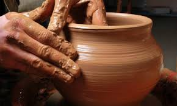

Artesanias de Barro Policromado  Comentarios comentario 1 Para hacer una nueva pieza de barro, primero tienes que tener listo el barro mojado de tal manera que se pueda moldear. Ojo!...Lo debes hornear a una temperatura de 12 grados centigrados. comentario 2 Para hacer una nueva pieza de barro, necesitamos un buen barro para realizar pizas de mayor calidad ya que es muy dificil relizalos y pocas personas lo hacen. Deja un comentario Comentario Nombre Correo Electrónico Enviar